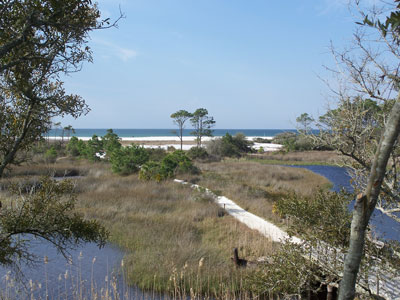
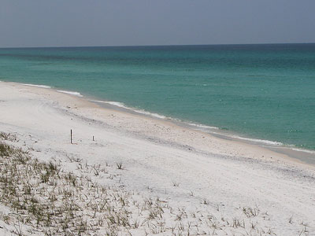

Emerald Coast Travel Guide
Unofficial name for the coastal area in Florida on the Gulf of Mexico that stretches about 100 miles and includes Pensacola Beach, Navarre Beach, Fort Walton Beach, Destin, and Panama City
Places to See in Emerald Coast

Ebyabe, CC BY-SA 3.0, via Wikimedia Commons; Image Size Adjusted

Camp Helen State Park
State Park is a historic site located west of Panama City Beach with amenities including beaches, birding, beachcombing, boating, canoeing, fishing, hiking, kayaking, swimming, and wildlife viewing

Corygodar, CC BY-SA 4.0, via Wikimedia Commons; Image Size Adjusted

Destin
Located on Florida's Emerald Coast, Destin is known for its white beaches and emerald green waters
Destin Harbor Boardwalk
Lively waterfront promenade lined with restaurants, shops, entertainment venues, fishing charters, and harbor views that serves as the centerpiece of the area's boating and tourism activity.

Larry D. Moore, CC BY-SA 3.0, via Wikimedia Commons; Image Size Adjusted

Grayton Beach State Park
One of the most popular parks in the state of Florida with salt marshes, sea oat covered dunes, crystal-white sand, and blue-green water
Henderson Beach State Park
State Park located near Destin, with beaches, bicycling, birding, fishing, hiking, picnicking, swimming, wildlife viewing and full camping facilities
Miramar Beach
Beach resort area due east of Destin, Florida
Navarre Beach
City with four miles of beach front on the Gulf of Mexico with several miles of beaches within the Navarre Beach Marine Park and the Gulf Islands National Seashore
Okaloosa Island
Okaloosa Island is an area on Santa Rosa Island, Florida

Jeff P from Berkeley, CA, USA, CC BY 2.0, via Wikimedia Commons; Image Size Adjusted
.jpg){kind=link}
Panama City Beach
Resort town in Florida on the Gulf of Mexico coast with unique, sugar-white sandy beaches of northwest Florida

Jeff P from Berkeley, CA, USA, CC BY 2.0, via Wikimedia Commons; Image Size Adjusted
Pensacola
Westernmost city in the Florida Panhandle, and is the site of the first Spanish settlement within the borders of the continental United States in 1559
Pier Park
Shopping and entertainment center in Panama City Beach with retail stores, dining options, and a movie theatre
Rosemary Beach
Planned community including more than 400 home sites and a mixed-use town center with shops, restaurants, and activities
Overview
The Emerald Coast is the popular name for roughly 100 miles of Florida Panhandle Gulf coast across Escambia, Santa Rosa, Okaloosa, Walton, and Bay counties. It runs from Pensacola Beach and Navarre through Fort Walton Beach, Destin, and Santa Rosa Beach to Panama City Beach.
The area is known for sugar-white sand, emerald-green water, coastal dune lakes, state parks, and deep-sea fishing, and it is a favorite family road-trip destination across the South, about three hours east of New Orleans. Top stops include Rosemary Beach, Sandestin, Miramar Beach, and Okaloosa Island.
Geography
The coast is a string of barrier islands, bays, and mainland beaches along the Gulf of Mexico. The sand is nearly pure quartz that washed down from the Appalachian Mountains, which gives the beaches their bright white color and squeaky sound. Emerald-green water comes from the clear Gulf. The coastal dune lakes between Destin and Panama City Beach are a rare feature found in only a few places in the world, and the area is generally flat with pine woodlands inland.
History
Native peoples built shell mounds and temple mounds along the coast, and Spain founded a short-lived colony near Pensacola under Tristán de Luna in 1559. Fort Pickens was built on Santa Rosa Island in the 1830s, and the Apache leader Geronimo was held there in the 1880s. Destin began as a fishing village in the 1840s. The area was marketed as the “Miracle Strip” in the mid-20th century, and the name Emerald Coast was coined in 1983 by a junior high student in a slogan contest. Planned communities such as Seaside, where The Truman Show was filmed, have grown up along Highway 30A.
Cities and Towns
Destin calls itself the “World’s Luckiest Fishing Village” and is known for record-setting saltwater fishing. Panama City Beach is a lively resort with 27 miles of beach, Navarre Beach is quieter, and the 30A communities, including Rosemary Beach, Seaside, and Santa Rosa Beach, are known for upscale beach-town design. Pensacola Beach anchors the western end.
National Protected Areas
Gulf Islands National Seashore protects barrier islands and beaches on Santa Rosa Island, near Navarre and Pensacola Beach, and Okaloosa Island in Florida, with Fort Pickens and the Naval Live Oaks area. The seashore offers hiking, snorkeling, and some of the quietest beaches on the coast.
State Parks and Historic Sites
Grayton Beach State Park has a Top Beach, dune lakes, and campsites, and Topsail Hill Preserve State Park has dunes and one of the best beaches in the Panhandle. Henderson Beach State Park in Destin is a natural beach with boardwalks, and Camp Helen State Park includes a historic lodge. St. Andrews State Park in Panama City Beach offers snorkeling and fishing, and Eden Gardens State Park has a historic mansion.
Seasons and Best Time to Visit
Summer, from Memorial Day through Labor Day, is the peak season, with warm water and crowded beaches. Spring break in March brings large crowds to Panama City Beach, and fall, from September through October, is warm with fewer people and lower rates. The Destin Fishing Rodeo takes place in October, and winter brings “snowbirds” and mild but cool weather. Hurricane season runs June through November, and red tide can occasionally affect the water.
This article uses material from the Wikipedia article "Emerald Coast", which is released under the Creative Commons Attribution-Share-Alike License 3.0. Additional information is from the National Park Service page for Gulf Islands National Seashore, Florida State Parks, and Visit Florida.